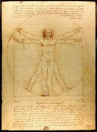

Hi, I'm Patrick.
I'm running for the Mount Vernon Triangle Advisory Neighborhood Commission (ANC).
I'm running to be an advocate for our neightborhood in this time of rapid change in our city. I'm someone who believes deeply in democracy and the best policy coming from the bottom up, and I hope to use the platform of the ANC to make a positive change in our community.
Learn More
Core Issues
Environment
Two households, both alike in dignity, In fair Verona, where we lay our scene, From ancient grudge break to new mutiny, Where civil blood makes civil hands unclean. From forth the fatal loins of these two foes A pair of star-cross'd lovers take their life; Whose misadventured piteous overthrows Do with their death bury their parents' strife. The fearful passage of their death-mark'd love, And the continuance of their parents' rage, Which, but their children's end, nought could remove, Is now the two hours' traffic of our stage; The which if you with patient ears attend, What here shall miss, our toil shall strive to mend.
Learn More Affordable Housing
Two households, both alike in dignity, In fair Verona, where we lay our scene, From ancient grudge break to new mutiny, Where civil blood makes civil hands unclean. From forth the fatal loins of these two foes A pair of star-cross'd lovers take their life; Whose misadventured piteous overthrows Do with their death bury their parents' strife. The fearful passage of their death-mark'd love, And the continuance of their parents' rage, Which, but their children's end, nought could remove, Is now the two hours' traffic of our stage; The which if you with patient ears attend, What here shall miss, our toil shall strive to mend.
Learn MoreStatehood
Two households, both alike in dignity, In fair Verona, where we lay our scene, From ancient grudge break to new mutiny, Where civil blood makes civil hands unclean. From forth the fatal loins of these two foes A pair of star-cross'd lovers take their life; Whose misadventured piteous overthrows Do with their death bury their parents' strife. The fearful passage of their death-mark'd love, And the continuance of their parents' rage, Which, but their children's end, nought could remove, Is now the two hours' traffic of our stage; The which if you with patient ears attend, What here shall miss, our toil shall strive to mend.
Learn More
Why Am I Running?

That's a great question.
While I wait for text to fill in this section, please enjoy this expert, which demonstrates some of the functionality of the text here:
Two households, both alike in dignity, In fair Verona, where we lay our scene, From ancient grudge break to new mutiny, Where civil blood makes civil hands unclean. From forth the fatal loins of these two foes A pair of star-cross'd lovers take their life; Whose misadventured piteous overthrows Do with their death bury their parents' strife. The fearful passage of their death-mark'd love, And the continuance of their parents' rage, Which, but their children's end, nought could remove, Is now the two hours' traffic of our stage; The which if you with patient ears attend, What here shall miss, our toil shall strive to mend.
What is the Advisory Neighborhood Commission?
That's a great question. While I wait for text to fill in this section, please enjoy this exerpt, which demonstrates some of the functionality of the text here:
Two households, both alike in dignity, In fair Verona, where we lay our scene, From ancient grudge break to new mutiny, Where civil blood makes civil hands unclean. From forth the fatal loins of these two foes A pair of star-cross'd lovers take their life; Whose misadventured piteous overthrows Do with their death bury their parents' strife. The fearful passage of their death-mark'd love, And the continuance of their parents' rage, Which, but their children's end, nought could remove, Is now the two hours' traffic of our stage; The which if you with patient ears attend, What here shall miss, our toil shall strive to mend.
Get in Touch
Office Hours?
Two households, both alike in dignity, In fair Verona, where we lay our scene, From ancient grudge break to new mutiny, Where civil blood makes civil hands unclean. From forth the fatal loins of these two foes A pair of star-cross'd lovers take their life; Whose misadventured piteous overthrows Do with their death bury their parents' strife. The fearful passage of their death-mark'd love, And the continuance of their parents' rage, Which, but their children's end, nought could remove, Is now the two hours' traffic of our stage; The which if you with patient ears attend, What here shall miss, our toil shall strive to mend.